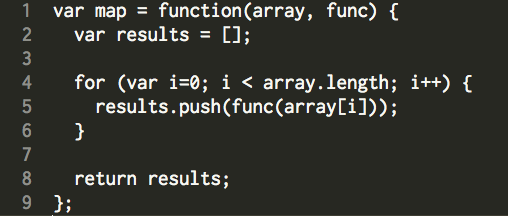

- Blog Posts
02/06/2015
Looping in Javscript vs. looping in Ruby
One of the most useful features of the Ruby language is that it allows sophisticated looping. With a variety of pre-packaged enumerators like .sort to .map, you have many ways of iterating through an object, without having to write a pre-defined function for it.
refer to my blog post on Ruby enumerators
In addition to saving you many lines of code, an advantage of using these pre-packages methods is that they make your code easier to read. Since their function are explicitely defined by their name, it's clearer to get an idea of the general flow of the code, much reminiscent of pseudocode. On the contrary, building enumerators 'manually' with series of while and for loops generally requires more attentive reading and can be confusing if there are too many buried inside of each other.
However, Ruby's pre-packaged methods can be taken for granted, especially for novice coders. Since they are essential to Ruby and required for an elegant refactoring, novice coders are adviced from the beginning to use them a lot. In doing so, they do not practice building loops from scratch, and therefore may not focus on the internal logic of the loop. Metaphorically, we can compare this with memorizing a mathematical theorem without understanding its proof. Although we can use the theorem in a variety of equations, our use of it will always stay somewhat limited.
Looping in Javascript is much more straight-forward: it is based on for loops and while loops. Their logic is the same throughout programmimg languages such as Ruby, but contrary to Ruby, there are no pre-packages iterators. If we want to use a .sort or .map enumerator, we must first build them as separate functions.
For example:
The advantage of having only these two types of iterators is that you simply learn better. As I stated earlier, building them "from scratch" allows you to have a better understanding of their internal logic.
Another advantage is that it makes it easier for you to switch to another programming language. Since for and while loops are common to all programming language (despite having varying syntax), it's easier for you to familiarized yourself to a new language, since you already have these basic loops to fall back on.
A third advantage is that it gives you room for more customization. Instead of using the pre-packaged method as they are, you can add certain specification to them. For example, you can define a map method that will map over every 2 elements. Technically, you can also do this in Ruby by writing your criteria in the {block} section, but with Javascript, you can specify this when you define your own .map function, so that later when you call this function, no blocks are required at all. As a result, building from scratch does give you somewhat more control and flexibility over your code.
The downside of using Javascript for and while loops is that they do tend to make your code longer, and harder to read. With less pre-packaged sepecification, and more punctuation- this language tends to be a bit less 'user-friendly' than languages like Ruby and Python.
In my opinion, programming languages like Javascript are always good to learn for starters, so that you avoid depending too much on pre-packaged method, but user-friendly languages like Ruby allow you to maximize your time by jumping right away into the 'crunchy stuff'.
-Sam